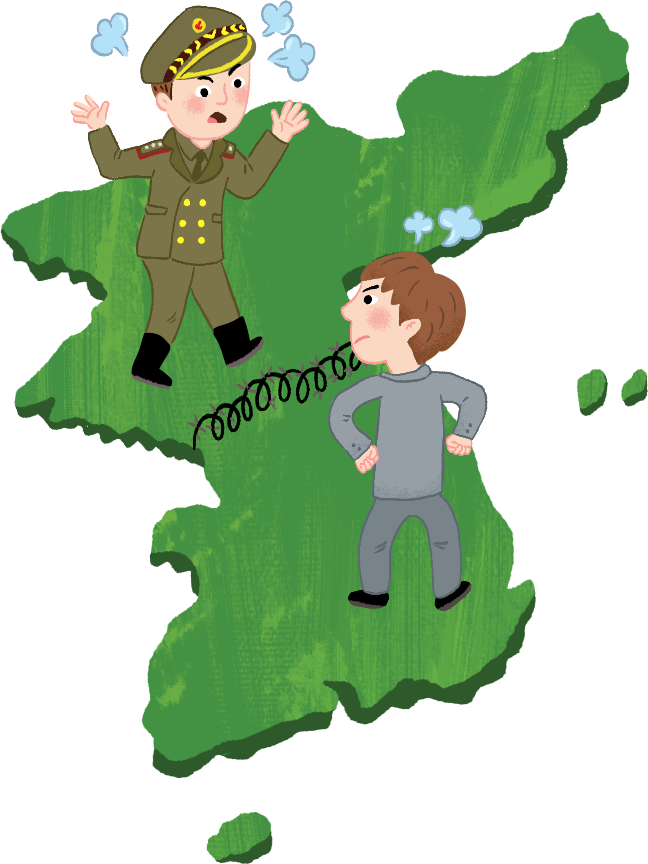
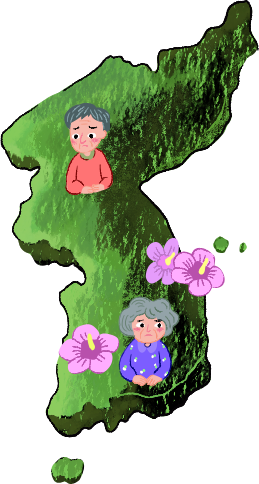

-
-
연표의 각 원을 클릭하세요.1945년8월 15일 광복모스크바 3국
외상회의대한민국 정부 수립
북한 정권 수립 -
연표의 각 원을 클릭하세요.1950년현재70년이 넘는 세월6·25 전쟁분단으로 인한
아픔남북교류
통일 염원
-
이산가족 문제: 사람들은 자기가 살던 고장을 떠나야 했고, 사랑하는 가족들과도 헤어지게 되었습니다.
전쟁 위협: 휴전 이후에도 전쟁의 위험을 안고 살아가고 있으며, 군사적 위협이 있어 불안을 느낍니다.
통일을 위해 남과 북은 다음과 같이 노력해 왔습니다.
평화 추구: 남북 모두가 자유롭고 평화로운 삶을 누리도록 한반도 평화 체제를 구축하려고 노력해 왔음.
자유 민주적 통일 추구: 자유 민주적 기본 질서에 입각해 통일돼야 함.
문화 교류: 남북이 교류에 힘써 왔으며 지속적으로 노력해 왔음.